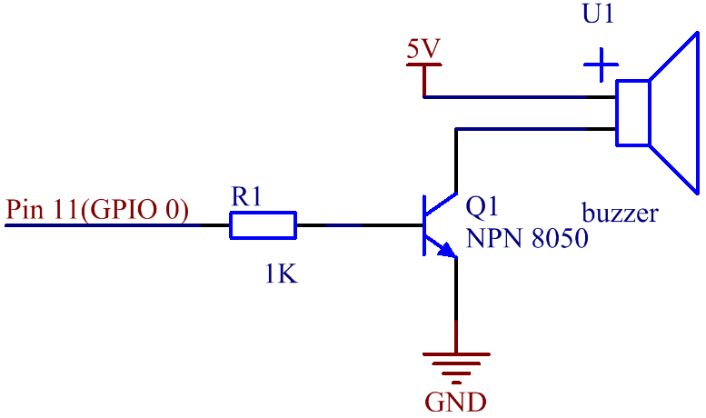

Lesson 12 Passive Buzzer¶
Introduction¶
In this lesson, we will learn how to make a passive buzzer to play music.
Newly Added Components¶

Schematic Diagram¶
The base pin(b pin) of the transistor is connected to pin11, the collector pin(c pin) to the cathode pin of the buzzer, and the emitter pin(e pin) to GND. The anode of the buzzer is connected to 5 v power supply. When pin11 inputs high voltage, the transistor will be switched on, and the collector will output low level. When there is a level difference between the two pins of the buzzer, the buzzer rings. When pin11 inputs low power level, the transistor is cut off, and the collector is at high level, and both ends of the buzzer are at high level, so the buzzer is silent.
{kind=link}
{kind=link}
Build the Circuit¶

For C Language Users¶
Command¶
1. Go to the folder of the code.
cd /home/pi/electronic-kit/for-raspberry-pi/c/Lesson_12_PassiveBuzzer
2. Compile the code.
gcc 12_PassiveBuzzer.c -lwiringPi
3. Run the executable file.
sudo ./a.out
Now, the buzzer automatically plays music on a loop.
Code¶
1.#include <wiringPi.h>
2.#include <softTone.h>
3.#include <stdio.h>
4.
5.#define BuzPin 0
6.
7.#define CM1 262
8.#define CM2 294
9.#define CM3 330
10.#define CM4 350
11.#define CM5 393
12.#define CM6 441
13.#define CM7 495
14.
15.#define CH1 525
16.#define CH2 589
17.#define CH3 661
18.#define CH4 700
19.#define CH5 786
20.#define CH6 882
21.#define CH7 990
22.
23.int song[] = {CH5,CH2,CM6,CH2,CH3,CH6,0,CH3,CH5,CH3,CM6,CH2,0};
24.int beat[] = {1,1,1,1,1,1,2,1,1,1,1,1,3};
25.
26.int main(void)
27.{
28. int i, j;
29.
30. if(wiringPiSetup() == -1){ //when initialize wiring failed,print message to screen
31. printf("setup wiringPi failed !");
32. return 1;
33. }
34.
35. if(softToneCreate(BuzPin) == -1){
36. printf("setup softTone failed !");
37. return 1;
38. }
39.
40. while(1){
41. printf("music is being played...\n");
42. for(int i=0;i<sizeof(song)/4;i++){
43. softToneWrite(BuzPin, song[i]);
44. delay(beat[i] * 250);
45. }
46. }
47. return 0;
48.}
Code Explanation¶
2.#include <softTone.h>
WiringPi includes a software-driven sound handler capable of outputting a simple tone/square wave signal on any of the Raspberry Pi’s GPIO pins. To maintain a low CPU usage, the minimum pulse width is 100μS. That gives a maximum frequency of 1/0.0002 = 5000Hz. Within these limitations, simple tones on a high impedance speaker or piezo sounder is possible.
3.#define CM1 262
4.#define CM2 294
5.#define CM3 330
6.#define CM4 350
7.#define CM5 393
8.#define CM6 441
9.#define CM7 495
These frequencies of each note are as shown. CM refers to middle note, CH high note, 1-7 correspond to the notes C, D, E, F, G, A, B.
23.int song[] = {CH5,CH2,CM6,CH2,CH3,CH6,0,CH3,CH5,CH3,CM6,CH2,0};
24.int beat[] = {1,1,1,1,1,1,2,1,1,1,1,1,3};
Define a section of music and the corresponding beat. The number in beat[] refers to the beat of each note in the song(0.5s for each beat).
35. if(softToneCreate(BuzPin) == -1){
softToneCreate( ) creates a software controlled tone pin. You can use any GPIO pin and the pin numbering will be that of the wiringPiSetup() function you used. The return value is 0 for success. This is used to determine whether it is successful for the software to control tone pin; if it fails, it will not execute the program.
42. for(int i=0;i<sizeof(song)/4;i++){
43. softToneWrite(BuzPin, song[i]);
44. delay(beat[i] * 250);
45. }
Employ a for statement to play song_1. In the judgment condition, i<sizeof(song_1)/4，”devide by 4” is used because the array song_1[] is an array of the data type of integer, and each element takes up four bytes. The number of elements in song (the number of musical notes) is gotten by deviding sizeof(song) by 4. To enable each note to play for beat * 500ms, the function delay(beat_1[i] * 500) is called. The prototype of softToneWrite(BuzPin, song_1[i])： void softToneWrite (int pin, int freq); This updates the tone frequency value on the given pin. The tone does not stop playing until you set the frequency to 0.
For Python Language Users¶
Command¶
1. Go to the folder of the code.
cd /home/pi/electronic-kit/for-raspberry-pi/python
2. Run the code.
sudo python3 12_PassiveBuzzer.py
Now, the buzzer automatically plays music on a loop.
Code¶
1.import RPi.GPIO as GPIO
2.import time
3.
4.Buzzer = 17
5.
6.CL = [0, 131, 147, 165, 175, 196, 211, 248] # Frequency of Low C notes
7.CM = [0, 262, 294, 330, 350, 393, 441, 495] # Frequency of Middle C notes
8.CH = [1, 525, 589, 661, 700, 786, 882, 990] # Frequency of High C notes
9.
10.song = [ CH[5], CH[2], CM[6], CH[2], CH[3], CH[6],CH[0], CH[3], # Notes of song
11. CH[5], CH[3], CM[6], CH[2],CH[0]]
12.
13.beat = [ 1,1,1,1,1,1,2,1,1,1,1,1,3 ]
14.
15.def setup():
16. GPIO.setmode(GPIO.BCM)
17. GPIO.setup(Buzzer, GPIO.OUT)
18. global Buzz
19.
20.
21.
22.def loop():
23. while True:
24. print ('\n Playing song...')
25. for i in range(1, len(song)):
26. if song[i] == 1 :
27. time.sleep(beat[i] *0.25)
28. else:
29. Buzz = GPIO.PWM(Buzzer, song[i])
30. Buzz.start(50)
31. time.sleep(beat[i] * 0.25)
32. Buzz.stop()
33. time.sleep(1) # Wait a second for next song.
34.
35.def destory():
36. Buzz.stop()
37. GPIO.output(Buzzer, LOW)
38. GPIO.cleanup()
39.
40.if __name__ == '__main__': # Program start from here
41. setup()
42. try:
43. loop()
44. except KeyboardInterrupt: # When 'Ctrl+C' is pressed, the child program destroy() will be executed.
destory()
Code Explanation¶
6.CL = [0, 131, 147, 165, 175, 196, 211, 248]
7.CM = [0, 262, 294, 330, 350, 393, 441, 495]
8. CH = [1, 525, 589, 661, 700, 786, 882, 990]
These are the frequencies of each note. The first 0 is to skip CL[0] so that the number CL[1]-CL[7] corresponds to the CDEFGAB of the note.
10.int song[] = {CH5,CH2,CM6,CH2,CH3,CH6,0,CH3,CH5,CH3,CM6,CH2,0};
13.int beat[] = {1,1,1,1,1,1,2,1,1,1,1,1,3};
Define a section of music and the corresponding beats. The number in beat[] refers to the beat of each note in the song(0.5s for each beat).
29. Buzz = GPIO.PWM(Buzzer, song[i])
30. Buzz.start(50)
Define pin Buzzer as PWM pin, then set its frequency to 786(song[0]) and Buzz.start(50) is used to run PWM. What’s more, set the duty cycle to 50%.
22. def loop():
23. while True:
24. print ('\n Playing song...')
25. for i in range(1, len(song)):
26. if song[i] == 1 :
27. time.sleep(beat[i] *0.25)
28. else:
29. Buzz = GPIO.PWM(Buzzer, song[i])
30. Buzz.start(50)
31. time.sleep(beat[i] * 0.25)
32. Buzz.stop()
33. time.sleep(1)
Play music in the while loop. As i increases gradually, the buzzer plays following the note in song[].
Phenomenon Picture¶